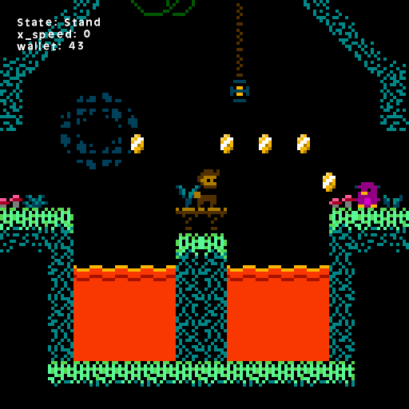

In Fall 2019 I taught an intro coding class to 3 classes of 5th, 6th, 7th & 8th graders at a Minneapolis church. The main class was teaching them coding principles in Scratch by programming the game Breakout (or Arkanoid, if you prefer). After that, we didn't have much time before the end of the trimester so I gave everyone sheets of graph paper with the basic instruction of drawing Mario-style platform levels. |----------------------| |-> Try it out here. <-| |----------------------| I took these basic drawings the kids made and tried to standardize most of it so I could implement it in game more smoothly. I had a basic platformer engine I made about a year before this, so the levels were mostly just plug-and-play. I did have to make some new tile and enemy sprites as I went along. I got some very nice badguy suggestions from some of the kids, as you can see below. Below that are some of the sprites I made for some of them. Here's a bunch of screenshots of parts of the game:
